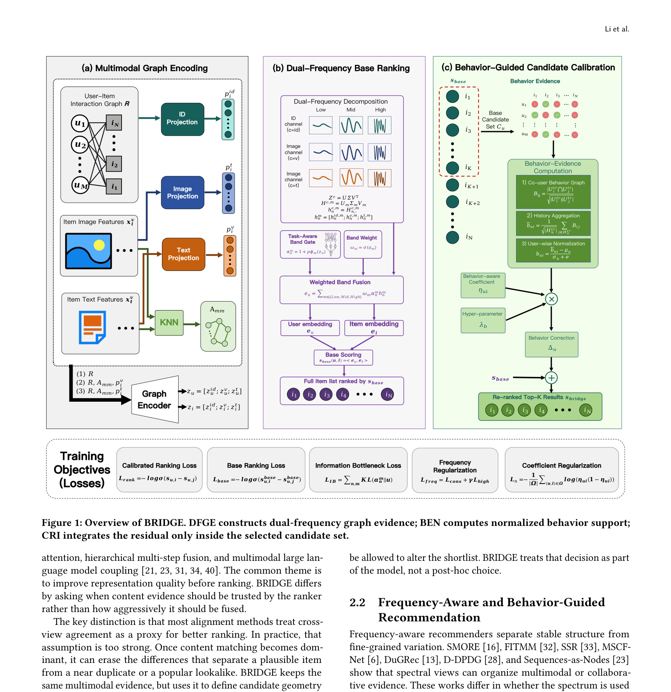
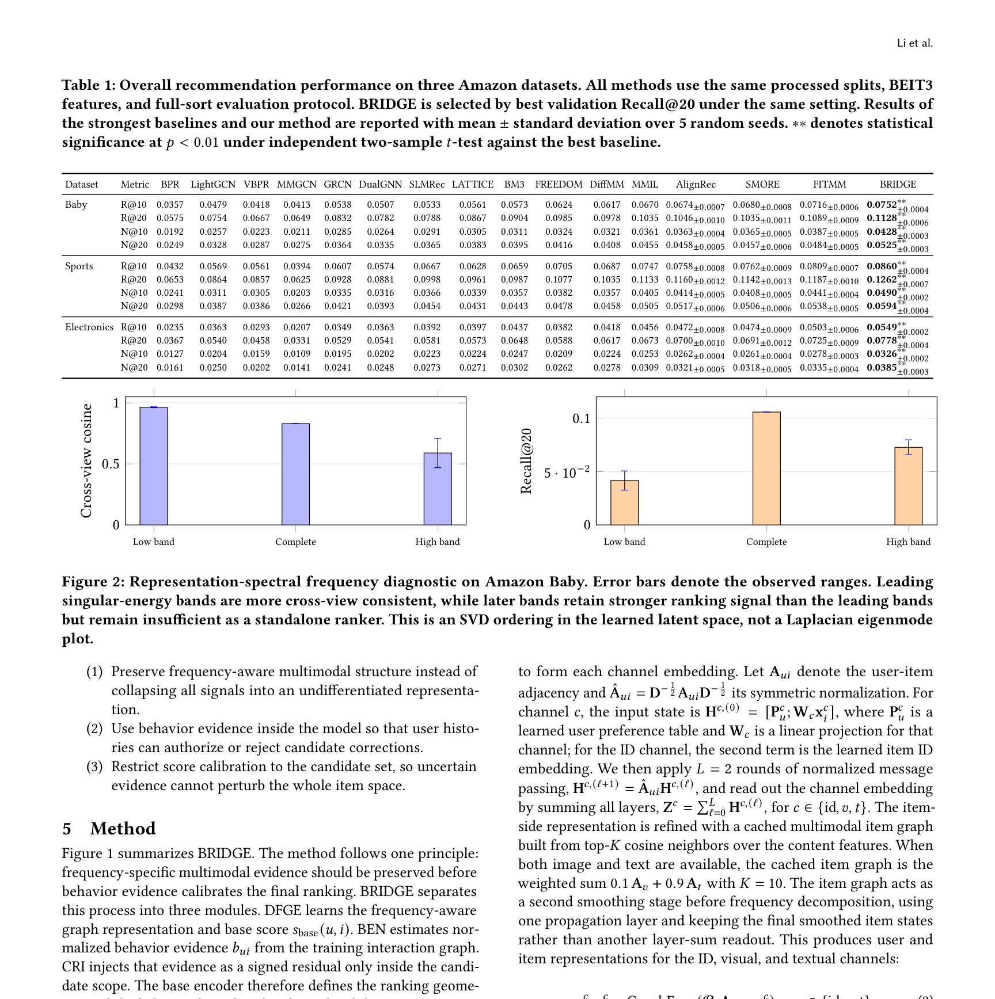
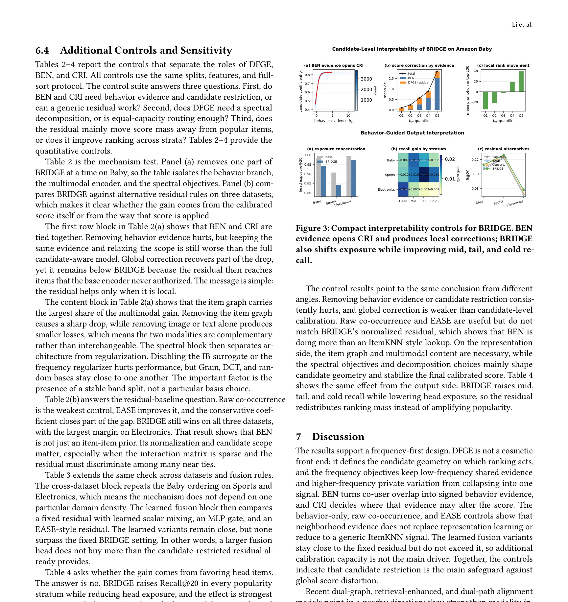

BRIDGE / BGCC：Behavior-Guided Candidate Calibration for Multimodal Recommendation
这里精读一篇 2026-05-21 公开在 arXiv 的论文《Behavior-Guided Candidate Calibration for Multimodal Recommendation》。中文可以叫《面向多模态推荐的行为引导候选校准》。
论文链接：arXiv:2605.22073 作者：Zesheng Li, Chengchang Pan, Honggang Qi 机构/团队：University of the Chinese Academy of Sciences。 公开日期：2026-05-21 submitted；arXiv 2605.22073，来源：arXiv cs.IR。 代码/项目页：已核验到 GitHub: https://github.com/LIZESHENG13/bridge。 本地 PDF：多校-BGCC.pdf。
0. 导读
它不是继续把视觉/文本特征做得更强，而是问“内容证据什么时候该进入最终候选排序”。这个问题非常贴近多模态推荐线上链路：粗排候选空间可以保持稳定，最后几百或几十个候选才用行为证据做残差校准。
BRIDGE 先用双频图证据把多模态关系拆成共享低频与差异高频，再把训练期 co-user overlap 转成带符号的行为支持，最后只在 multimodal backbone 产出的 shortlist 内做残差校准。论文在 Amazon Baby、Sports、Electronics 上和 FREEDOM、DiffMM、AlignRec、SMORE、FITMM 等强基线比较，Recall 与 NDCG 均有提升，且作者强调 NDCG 提升说明方法主要改善近顶部排序。
从今天的候选池看，这篇论文的价值不只是提出一个模型名，而是把推荐或大模型系统中的一个真实工程矛盾拆开：模型能力、候选边界、证据质量、推理成本和线上稳定性不能只靠单一指标解释。下面按背景、方法、实验、个人理解和复现建议展开。
1. 背景与问题
多模态推荐通常把文本、图片、属性和交互行为放进统一表征空间，期望内容相似度可以补足交互稀疏性。但线上排序链路里，内容相似并不总等于“用户会点”。两个商品视觉很像，可能是替代品，也可能只是同类干扰项；两个视频语义接近，可能帮助冷启动，也可能压制用户行为里真正有区分度的部分。
这篇论文抓住一个经常被忽略的问题：多模态信号的价值取决于它进入链路的位置。若在全局 embedding 里强行对齐，模型可能把推荐任务特有的高频差异抹掉；若完全不用内容，长尾和冷启动 item 又难以被覆盖。BRIDGE 的目标是把内容证据留在 backbone 里保持候选稳定，而把行为证据作为候选内校准器，而不是全局重写器。
作者用频谱分析说明了这种矛盾：低频成分更像跨视图共享结构，高频成分保留更具判别性的推荐变化。对工业系统来说，这个解释很自然。召回阶段希望广覆盖、稳结构，排序阶段希望保留用户行为和上下文的细粒度差别；如果所有阶段都追求跨模态一致，最终会牺牲排序的个性化。

图 1 展示 BRIDGE 的总体结构：DFGE 负责构造双频图证据，BEN 把用户行为重叠转成行为支持，CRI 决定残差只作用在候选集内部。这个图最重要的不是模块名，而是它把“多模态表征学习”和“排序阶段校准”分离开来，避免内容相似度在全局空间里过度支配协同信号。 放在背景部分看，它说明论文真正要解决的是系统链路中的瓶颈，而不是单纯追求一个更复杂的网络结构。这个图也给后续方法拆解建立了参照：哪些信息应该先保留，哪些信息应该等到任务或候选明确后再使用。
2. 核心方法
方法由三个部分组成。DFGE 先在多模态图上构造双频证据，用低频成分捕获文本、图像和行为之间的共享关系，用高频成分保留候选间的差异。作者没有把频谱分析停留在诊断层，而是把它转成模型约束，让内容证据不再无条件扩散到全部 item。
BEN 是行为证据归一化模块，它利用训练期可见的 co-user overlap 形成正负支持。这里的关键是“训练期”和“候选内”：行为重叠不直接拿去做线上泄露式标签，而是作为已知交互图里的校准信号；它也不对全量 item 施加影响，只对 multimodal backbone 已经挑出的 shortlist 调整相对顺序。
CRI 则是候选残差集成。它把 BRIDGE 和常见 multimodal fusion 区分开：不是把行为残差加到每一个 item 分数上，而是在候选边界内调节。这样做的直觉是，如果 backbone 没有把某个 item 召进候选，校准器不强行拉入；如果它已经进入候选，行为证据再判断它是否应该排得更高。
损失设计同时约束信息瓶颈、频率正则和候选残差。这样的组合会增加实现复杂度，但也让论文的主张更清楚：多模态推荐不是“特征越一致越好”，而是要控制一致性与差异性的作用位置。

表 1 是三组 Amazon 数据集上的主结果，论文统一使用 BEIT3 特征、固定数据切分和 full-sort 评估。BRIDGE 在 Recall@10/20 与 NDCG@10/20 上领先强多模态基线，尤其 NDCG 的提升说明它不是简单扩大可召回集合，而是在候选内部把更合适的 item 推到前面。 方法图或结果表在这里的作用是把抽象概念落到可实现模块。复现时应优先复刻这些模块之间的输入输出，而不是只记住论文里的缩写。尤其要关注哪些信号是训练期可得、哪些信号是查询或候选确定后才可得，避免把离线信息泄露到线上评估。
3. 实验与结果
实验使用 Amazon Baby、Sports、Electronics 三个公开数据集，和 BPR、LightGCN、VBPR、MMGCN、LATTICE、BM3、FREEDOM、DiffMM、MMIL、AlignRec、SMORE、FITMM 等传统与多模态推荐基线比较。论文强调所有方法使用同一处理切分、BEIT3 特征和 full-sort 评估，降低了因特征预处理差异造成的比较噪声。
主结果显示 BRIDGE 在三个数据集上都有稳定收益，并且 NDCG 的改善尤其值得注意。Recall 提升可以来自更多候选被覆盖，NDCG 提升则更接近排序质量，说明候选内校准确实改善了顶部 item 的相对顺序。
消融部分拆掉 BEN、CRI、频率约束和不同残差规则，结果支持作者的核心观点：行为证据本身有用，但作用范围更关键。全局残差可以恢复一部分效果，却低于候选内校准，说明不加边界地引入行为或内容信号会伤害排序稳定性。

图 3 与若干机制控制实验用于解释 BRIDGE 的收益来源：行为证据、候选内作用范围、频率正则和残差强度都会影响效果。工程上这比单一主表更有价值，因为它提醒我们校准信号如果不受候选边界约束，很容易把 popularity 或视觉近邻误当作真实偏好。 读这类结果时不能只看最高值，还要看作者控制了哪些变量。若实验同时改变 backbone、特征、数据切分和后处理，就很难判断收益来源；本轮笔记只采纳论文文本能支撑的结论，对未公开的线上绝对指标和未核验代码状态保持保守。
4. 我的理解
我认为这篇论文的价值在于把多模态推荐从“融合更多模态”拉回到“在哪个阶段相信什么信号”。许多推荐系统的问题不是缺少视觉或文本特征，而是没有把特征和链路阶段对齐。BRIDGE 的候选内残差思想适合迁移到召回后重排、相似商品去重、内容安全校准和长尾探索。
可能被高估的地方是频谱解释的普适性。低频/高频划分在图学习里有直观意义，但不同平台的商品图、视频图、广告图的边结构差异很大，频谱诊断不一定总能稳定区分共享语义和推荐特异信号。落地时不能只照搬参数，而要先做离线诊断。
这篇论文也提示 LLM4Rec 不应只关注把 LLM 表征塞进推荐模型。LLM 或多模态模型提供的是内容证据，最终仍要被行为约束和候选边界控制。否则大模型语义越强，越可能把“语义像”误当作“用户想要”。
进一步说，这篇论文可以作为今天两类趋势的交叉样本：推荐系统论文越来越强调候选生成、校准、稳定性和工业链路；LLM 论文越来越强调训练后优化、记忆、检索、推理成本和 runtime。真正值得迁移的不是某个缩写，而是它如何把任务约束写进模型或系统。
5. 工程启发与复现建议
复现可以从两步做起：先用现有多模态推荐 backbone 产出候选，再实现一个候选内残差校准器，输入包括用户历史重叠、item 内容近邻和候选原始分数。最小实验不必完整复现全部频谱模块，可以先验证“候选内校准”相对“全局残差”的收益。
线上 A/B 需要关注三个指标：顶部点击或转化、候选多样性、以及头部 item 与长尾 item 的分布变化。BRIDGE 可能提升 NDCG，但如果残差过强，也可能把某些行为共现非常密集的头部商品推得过高。
对于工程系统，最好把校准器做成可开关、可限幅的重排模块。这样可以在不同流量桶里控制残差强度，并对新用户、冷启动 item、低曝光 item 分别设置不同阈值。
复现时建议先做最小可控实验，再逐步增加模块。第一版只需要验证核心假设是否成立；第二版再引入论文完整的训练目标、缓存策略或图结构；第三版才考虑线上 A/B。这样可以避免为了复现完整论文而忽略业务里最关键的瓶颈。
6. 局限与风险
- 公开数据集上的 Amazon 三域结果不能直接代表工业多模态推荐，尤其真实平台还会有库存、价格、活动、商家质量和风控等约束。
- co-user overlap 属于训练期行为证据，若数据切分或时间窗口处理不严，容易引入未来信息或曝光偏差。
- 频谱诊断依赖图结构质量，若图中边主要来自噪声共现，低频/高频解释会变弱。
- 候选内校准无法弥补召回阶段漏召的 item，因此系统仍需保证 backbone 召回覆盖。
- 方法增加了图构建、频谱正则和残差调参成本，小团队复现时需要先做简化版。
这些局限不意味着论文没有价值，而是提醒我们把它放进真实系统时需要额外验证。尤其是推荐和 Agent 场景，离线 benchmark 与线上反馈闭环之间通常存在分布差异，任何离线提升都需要经过延迟、成本、隐私、稳定性和可解释性检查。
7. 后续跟进
- 检查 GitHub 代码中 DFGE、BEN、CRI 的具体实现，确认是否容易接入现有 LightGCN 或多模态 backbone。
- 在业务数据上比较全局残差、候选内残差和仅内容 rerank 三种方案。
- 重点跟踪长尾 item 和新 item 的收益是否来自真实偏好提升，而不是曝光分布变化。
- 把 BRIDGE 思路迁移到 LLM 语义召回后的重排校准，测试大模型语义特征是否也需要候选边界。
如果后续出现代码、项目页或会议版本，应优先核验实现细节、数据切分和指标口径。今天的笔记基于 arXiv 页面、PDF 原文和可打开的项目链接状态整理，不把未公开信息写成确定事实。
8. 精读补充：落地检查清单
围绕“候选内校准、多模态残差和行为证据边界”，我会把这篇论文的后续验证拆成事实核验、最小复现、系统接入和风险监控四层。事实核验层只回答论文到底证明了什么：哪些数据集、哪些指标、哪些 baseline、哪些设置是公开可见的，哪些只是作者在摘要或工业场景中概括的结论。最小复现层只验证一个核心假设，不急着复刻全部模块；如果核心假设在小数据、小模型或离线环境中都不稳定，就没有必要直接进入复杂实现。系统接入层关注输入输出契约，明确哪些信号来自训练期、哪些来自查询时、哪些可以进入在线链路、哪些只能作为离线分析。风险监控层则把失败模式写成指标，例如候选覆盖下降、长尾被压制、证据不忠实、延迟超预算、缓存恢复过多、用户隐私字段泄露等。
如果要把这篇论文迁移到真实多模态推荐链路，我会把它拆成三个实验层级。第一层只验证候选内残差是否有效：冻结现有召回或粗排模型，用同一批候选比较全局 residual、候选内 residual 和不加 residual 的差异，观察 NDCG、MRR、曝光集中度和长尾覆盖。第二层再加入行为证据，明确 co-user overlap 的时间窗口，保证不会把未来曝光或未来点击泄露进训练。第三层才复现双频图证据和频率正则，检查高频信息是否真的对应推荐判别信号。上线时要把残差强度做成可监控参数，并按新用户、老用户、低曝光 item、头部 item 分桶，否则校准器可能在总体指标提升时悄悄伤害某些子人群。
和今天其他入选论文放在一起看，这篇论文还有一个共同启发：大模型和推荐系统的结合正在从“端到端替换”走向“模块化接入”。推荐侧需要候选边界、行为反馈、广告稳定性和在线成本；LLM 侧需要搜索路径、长期记忆、KV cache 和训练后优化。真正能落地的方案通常不是把所有判断交给一个大模型，而是把大模型产生的语义或推理信号变成可度量、可缓存、可回滚、可审计的中间表示。下一步如果要继续跟进，我会优先看代码是否公开、数据切分是否可复现、指标是否包含稳定性和成本、以及论文里的模块能否独立替换到现有系统中。
9. 精读补充：指标与上线观测
我还会为这篇论文单独设计一组上线前观测指标。第一组是任务主指标，推荐论文看 Recall、NDCG、HitRate、CTR/CVR 或候选增量覆盖，LLM 论文看 Exact Match、证据覆盖、回答忠实性、峰值显存和端到端延迟。第二组是稳定性指标，例如不同随机种子、不同 prompt、不同轻微输入扰动、不同时间窗口下的候选集合和答案是否剧烈变化。第三组是成本指标，包括训练采样次数、推理 token、检索调用数、GPU 显存、P95 延迟和缓存恢复次数。第四组是风险指标，包括隐私字段泄露、历史偏好过期、错误证据改写、长尾 item 被压制、语义标签误分类和线上反馈闭环放大偏差。只有当这四组指标都能解释论文收益来源时，才适合把方法从离线笔记推进到工程试验。
这也是我今天筛选这些论文的主要原因：它们都不只给出一个更高分数，而是提供了一个可以被拆解、监控和复现的系统假设。对推荐系统来说，候选边界、行为证据、广告稳定性和 nearline 特征比“LLM 是否足够强”更关键；对大模型系统来说，搜索路径、长期记忆、KV cache 和证据蒸馏比“上下文是否更长”更关键。后续如果继续读同一方向，我会优先选择那些把这些中间指标公开清楚、并能说明失败案例的论文。